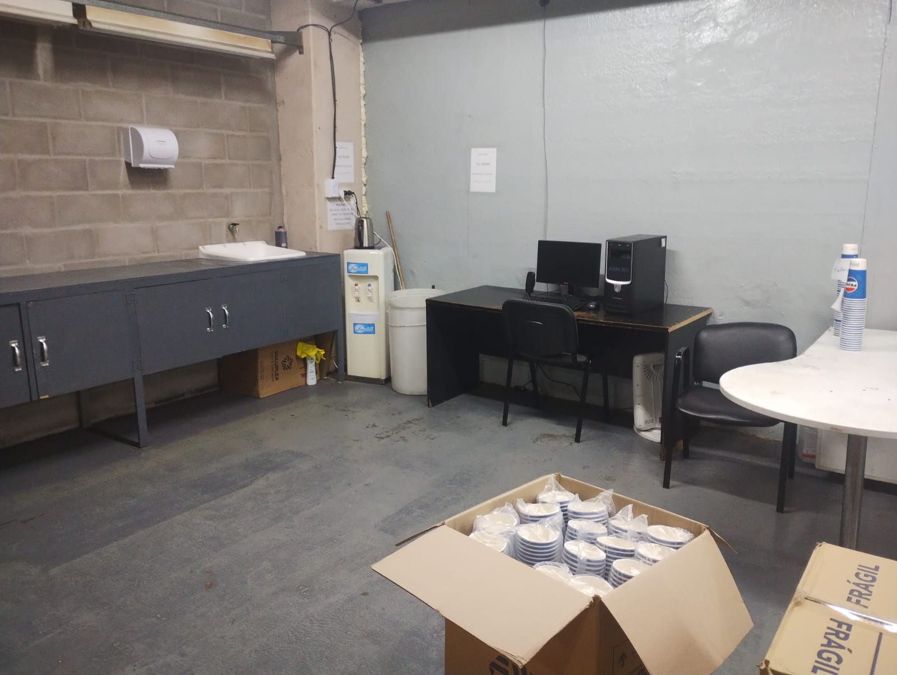
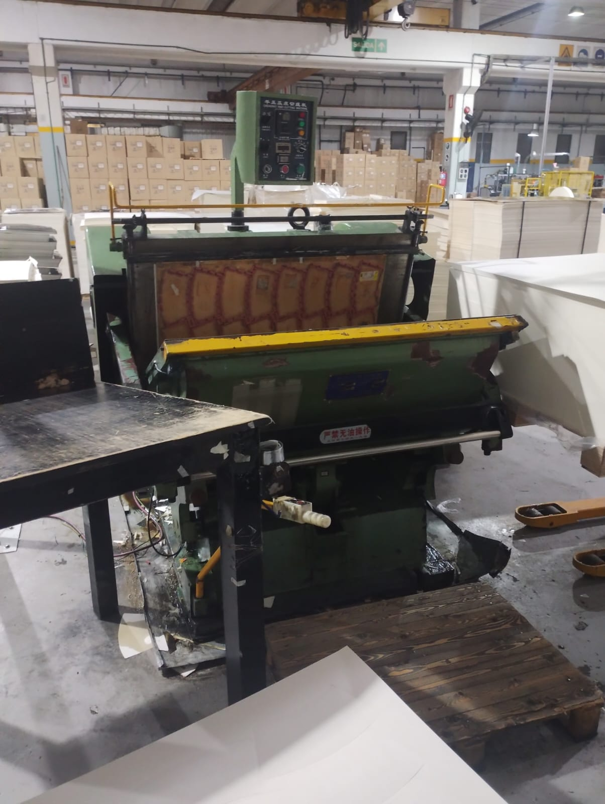
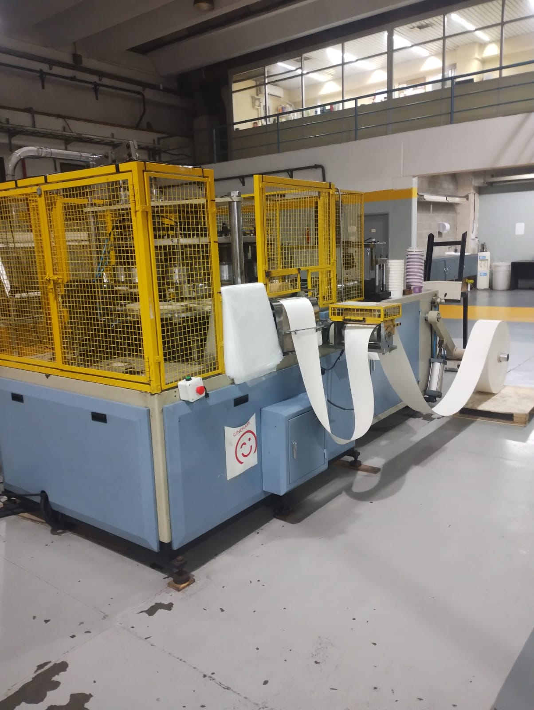
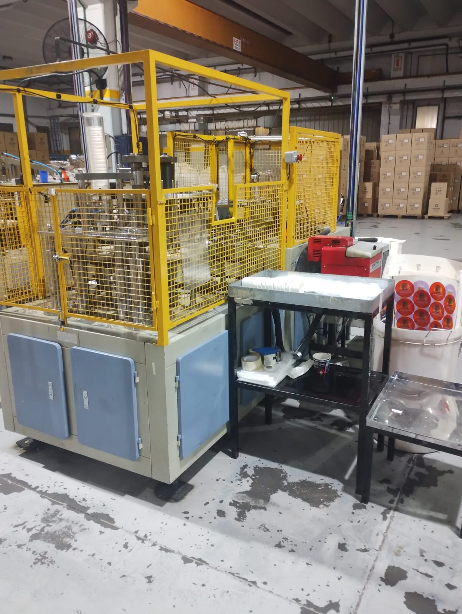
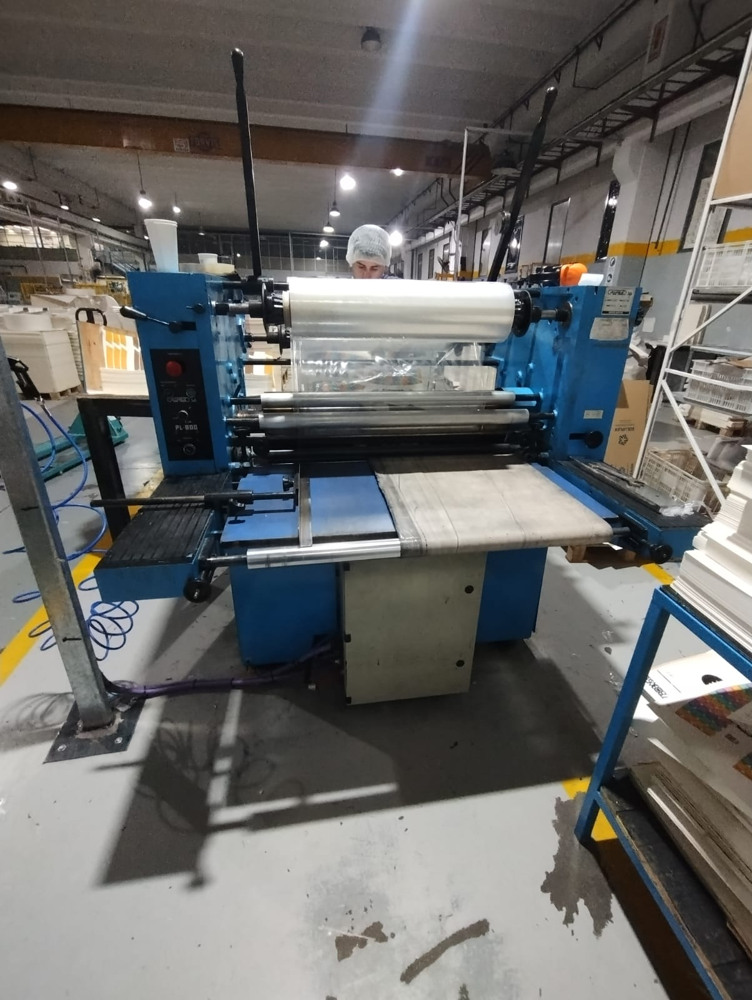
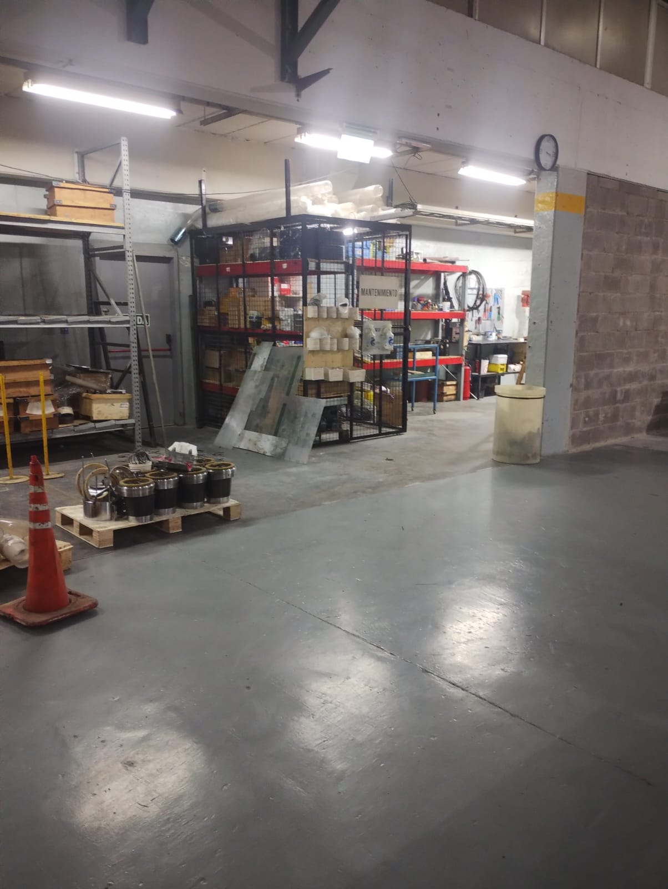

PAGINA SECTORES
Calidad
Este sector se encarga de controlar la calidad de los productos que se fabrican. Tanto en el área de troquelado, laminado y confeccionado.
Troquelado
Este sector se encargar de troquelar a medida cada envase que solicite el cliente.
Confeccionado Balde
Este sector se encarga de realizar los baldes de 150oz y 130oz.
Confeccionado Doble Pared
Este sector se encarga de realizar los vasos de doble pared de 8oz y 12oz.
Laminado
Este sector se encarga de laminar los pliegos, puede ser laminado brillante o mate.
Mantenimiento
Este sector se encargar de que cada sector tenga un buen funcionamiento en las maquinarias, dandole la facilidad que el operario pueda trabajar con continuidad.